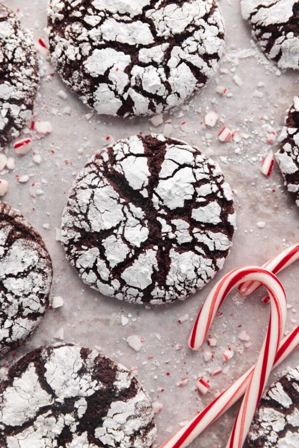

Peppermint Crinkle Cookies

These fudgy chocolate peppermint crinkle cookies are the perfect addition to your holiday cookie boxes.
Soft, chewy, and indulgent these cookies are a major crowd pleaser.
Prep Time: 20 minutes
Cook Time: 10 Minutes
Total Time: 30 Minutes
Yield: 16 Cookies
Ingredients:
For the coating:
- 100g granulated sugar
- 60g powdered sugar
For the cookies:
- 114g unsalted butter, at room temperature
- 133g packed light brown sugar
- 67g granulated sugar
- 2 large eggs, at room temperature
- 1 tsp. vanilla extract
- 3/4 tsp. peppermint extract
- 167g all-purpose flour
- 43g Dutch processed cocoa powder
- 1.5 tsp. baking powder
- 1/4 tsp. baking soda
- 1/2 tsp. salt
Instructions
- Preheat the oven to 350°F. Line two baking sheets with parchment paper. Pour the granulated sugar for the coating into a small bowl. Pour the powdered sugar into a second small bowl. Set both aside.
- In a stand mixer fitted with the paddle attachment, beat together the butter, brown sugar, and granulated sugar on low speed until combined. Gradually increase the speed to medium-high and mix until light and fluffy, about 2 minutes.
- Use a silicone spatula to scrape down the sides and bottom of the bowl, then add in the eggs, vanilla and peppermint extract. Beat on medium-high speed until the mixture is smooth and fluffy, about 1 minute, scraping down the bowl as needed.
- Add the flour, cocoa powder, baking powder, baking soda, and salt. Beat on low speed until just combined and no streaks of flour remain, about 30 seconds
- Use a 1 ½ ounce cookie scoop to portion out equal amounts of dough. Roll the dough in your hands to smooth the edges. Roll the dough balls in the granulated sugar first, then roll them in the powdered sugar, evenly coating the outside of the cookie. Place the cookies on the prepared baking sheets, spacing them 2 inches apart.
- Bake until the cookies have formed cracks all over and are set and firm around the edges but still somewhat soft in the middle, 9 to 10 minutes. Allow the cookies to cool completely on the baking sheet before serving.
Equipment
- Cookie sheet
- Parchment paper sheets
- Rubber spatula
- Cookie scoops
- Stand mixer
Home